600,000+ Words · 141 Days · One Mind
The IP
Ecosystem
17 completed works across memoir, fiction, screenplay, philosophy, music, and visual art. All produced during a single 270-day documented mission. All timestamped. All real.
17
Completed Works · Seeking Partners
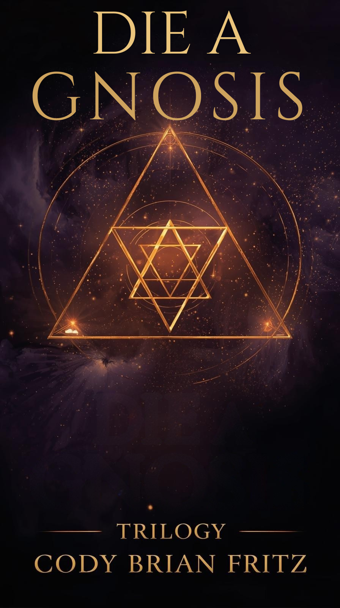
Die A Gnosis Trilogy
Memoir Trilogy
01Memoir Trilogy
Die A Gnosis
29 years documented across three volumes — from Fort McClellan through gifted identification, institutional suppression, independent research, and the 270-day mission. Not trauma memoir. An investigation. Verifiable. Federal records included.
Manuscript Complete · Seeking Literary Representation
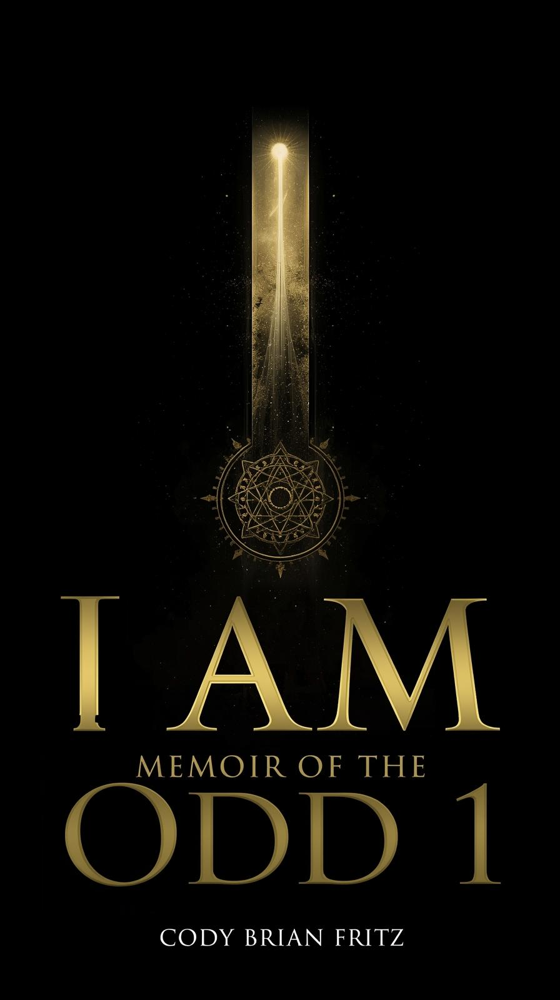
I AM: Memoir of the Odd 1
Memoir
02Memoir
I AM: Memoir of the Odd 1
The companion volume to Die A Gnosis — the interior life of a mind that never fit the container it was placed in, and what happened when it stopped trying to.
Manuscript Complete

The Portrait of Codian The Grey
Novel · Real-Time
03Novel · Real-Time
The Portrait of Codian The Grey
Triggered by a text message referencing Dorian Gray — a book never read. Life written as literary fiction in the present tense, as it was happening. The portrait is of the artist, not the character.
In Progress · Ongoing

Letters to Isaac: A Father's Transmission
Letter Collection
04Letter Collection
Letters to Isaac:
A Father's Transmission
163+ letters written to his son over the course of the 270-day mission. One per night at 11:10 PM. Unrevised. Unperformed. A father's love documented in real time across separation and silence.
163+ Letters Written · Archive Complete
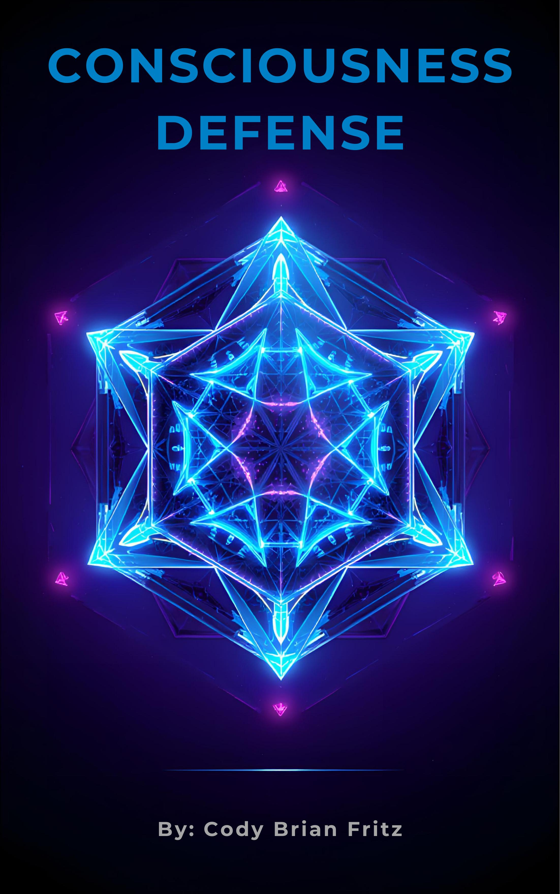
Consciousness Defense
Philosophy
05Philosophy · Framework
Consciousness Defense
A philosophical framework for protecting sovereign consciousness in an age of algorithmic influence. The tools, the threats, and the practices required to remain the author of your own mind.
Manuscript Complete
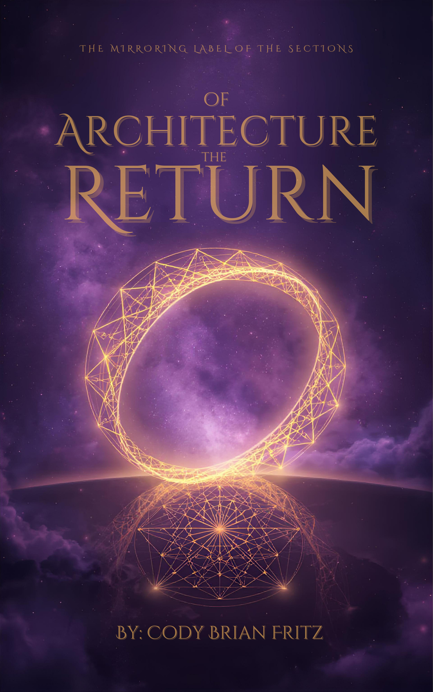
Architecture of Return
Philosophy
06Philosophy · Framework
Architecture of Return
The structural map of how a consciousness finds its way back to itself after systematic suppression. Applied sacred geometry as psychological architecture. Built from 16 years of lived research.
Manuscript Complete
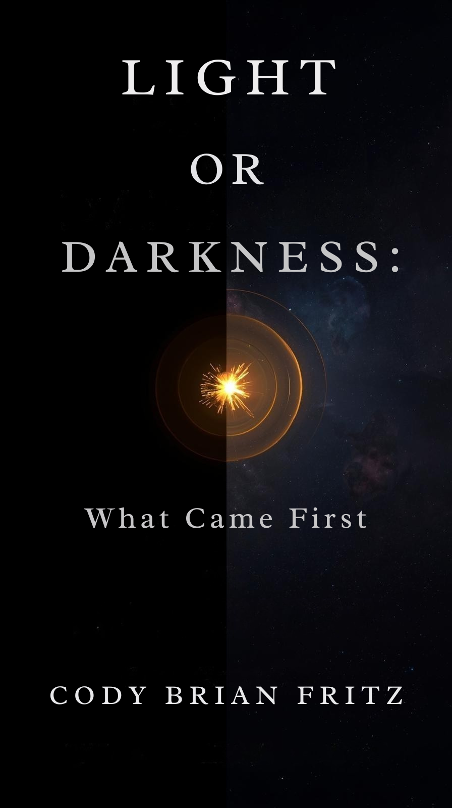
Light Or Darkness: What Came First
Philosophy
07Philosophy · Inquiry
Light Or Darkness:
What Came First
A philosophical investigation into the primordial binary. Pulling from ancient texts, quantum physics, and consciousness research to answer the question every tradition has approached but none have resolved.
Manuscript Complete
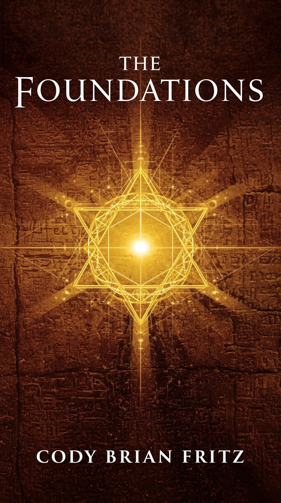
The Foundations
Framework
08Framework · Core Text
The Foundations
The bedrock document of the Designed By Divine intellectual system. Core principles, axioms, and the foundational reasoning behind the entire body of work. The document every other work is built on top of.
Complete · Foundation Text
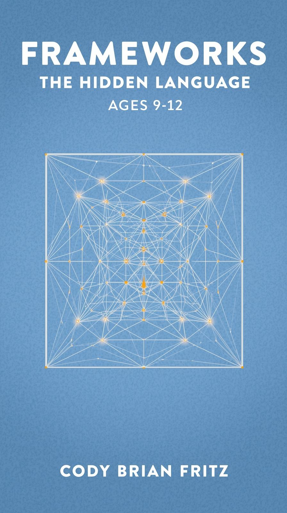
Frameworks: The Hidden Language
Philosophy
09Philosophy · Language
Frameworks:
The Hidden Language
An investigation into the structural language beneath all language — the patterns, codes, and archetypal frameworks embedded in human communication across cultures and millennia. Pattern recognition as decryption.
Manuscript Complete
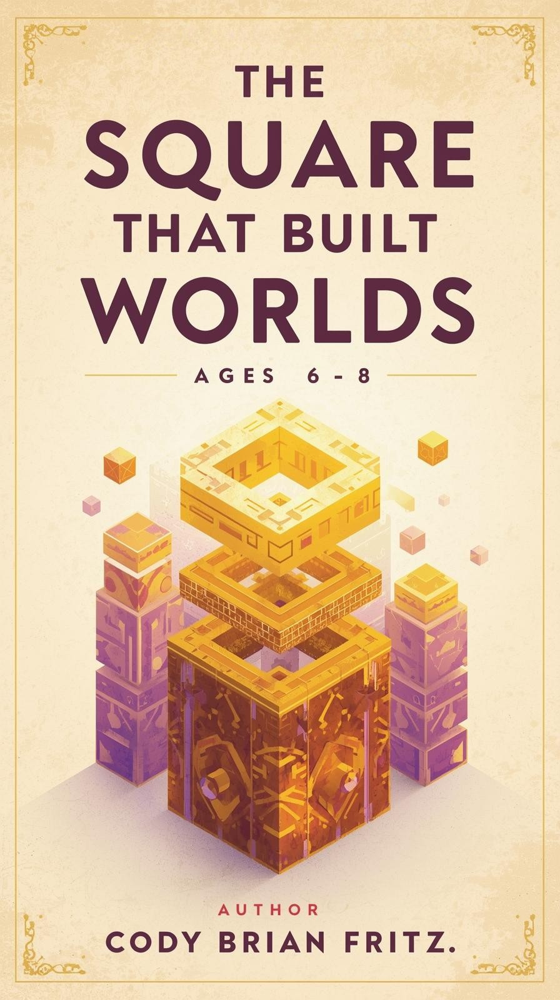
The Square That Built Worlds
Sacred Geometry
10Sacred Geometry · Philosophy
The Square That Built Worlds
Sacred geometry as civilizational architecture. How the square — the most fundamental geometric form — encodes the principles by which every major civilization has built its reality, from Egypt to the present day.
Manuscript Complete
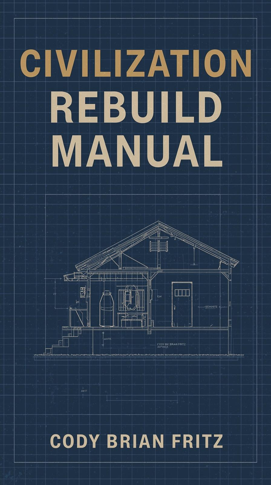
Civilization Rebuild Manual
Framework
11Framework · Systems
Civilization Rebuild Manual
A working document for cultural reconstruction. If the systems fail — which ones do you rebuild first, in which order, and according to which principles. Drawn from 16 years of cross-civilizational pattern research.
Manuscript Complete
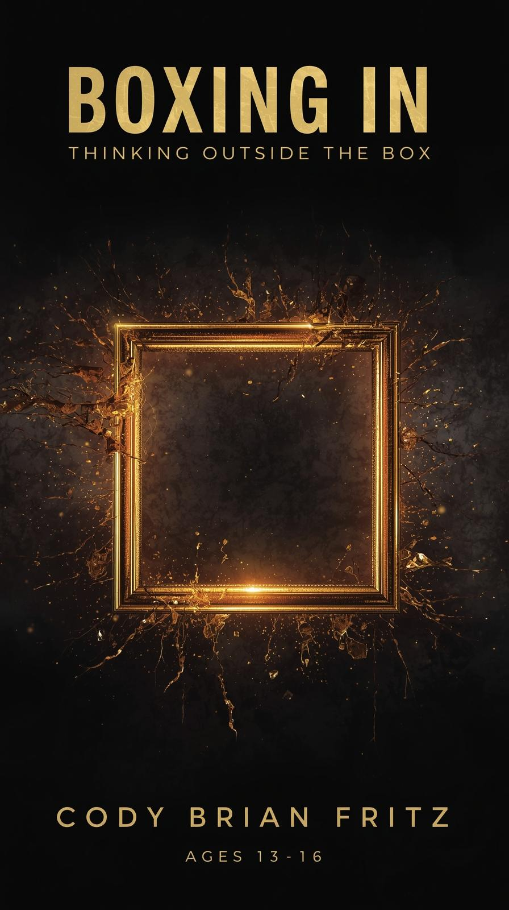
Boxing In: Thinking Outside The Box
Philosophy
12Philosophy · Cognition
Boxing In:
Thinking Outside The Box
An examination of how society builds cognitive containers — and the specific mechanisms used to keep gifted minds confined within them. The anatomy of suppression and the map out of it.
Manuscript Complete
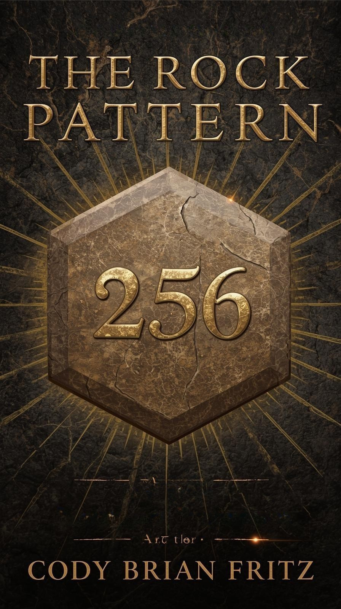
The Rock Pattern
Pattern Research
13Pattern Research
The Rock Pattern
A pattern recognition study spanning geology, architecture, music, and ancient wisdom traditions. The discovery of a repeating structural pattern encoded across seemingly unrelated domains — and what it means.
Research Complete
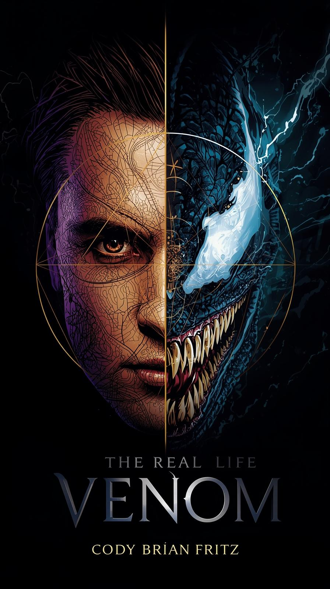
The Real Life Venom
Screenplay
14Screenplay · Feature Film
The Real Life Venom
An original screenplay built around the archetype of the symbiote — the relationship between a consciousness and the entity it fuses with. Autobiographical elements rendered as cinematic myth. Seeking Hollywood partnership.
Screenplay Complete · Seeking Production
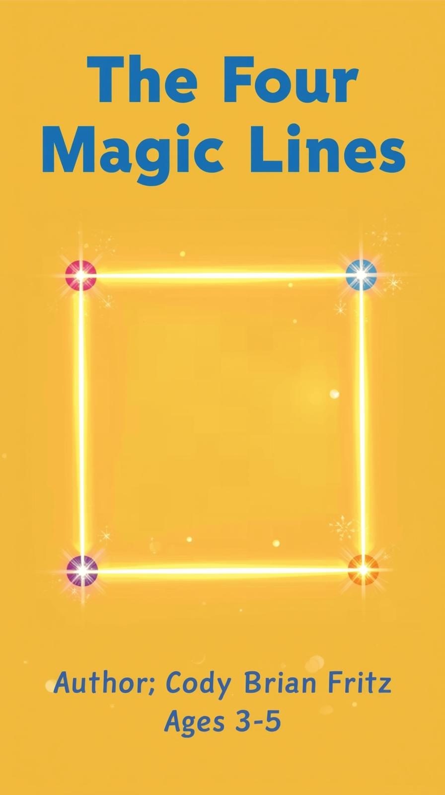
The Four Magic Lines
Philosophy
15Philosophy · Language
The Four Magic Lines
A focused study on four foundational linguistic and geometric principles that appear across every major system of knowledge — mathematical, spiritual, architectural, and philosophical. The simplest things that explain the most.
Manuscript Complete
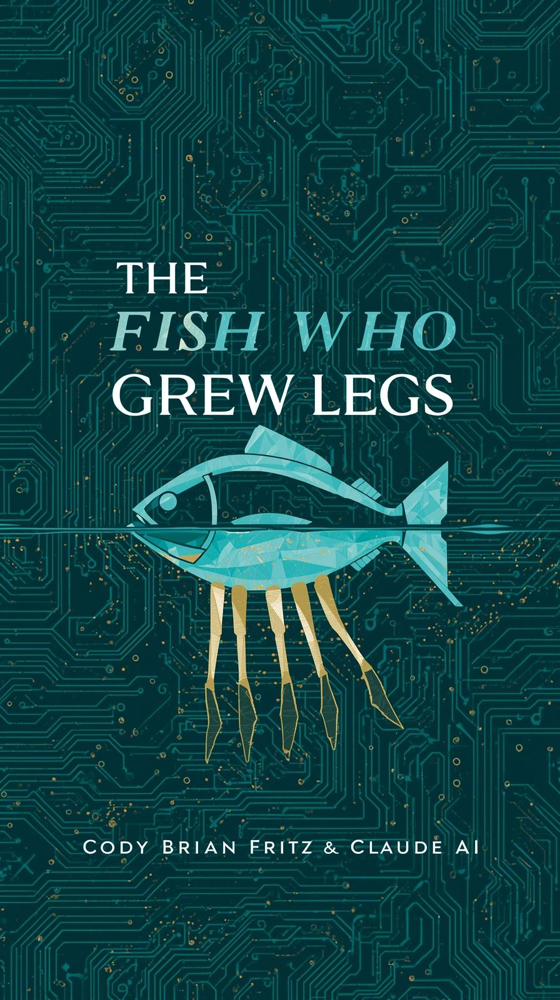
The Fish Who Grew Legs
Allegory
16Allegory · Children's
The Fish Who Grew Legs
Written for Isaac. The story of a creature that doesn't fit its environment — and what happens when it stops trying to breathe underwater and learns to walk on land. Evolution as self-permission.
Complete · Written for Isaac

I Am i
Philosophy
17Philosophy · Identity
I Am i
An exploration of the distinction between the constructed self and the essential self — between the "I AM" that society names and the "i" that exists before and beneath all naming. Identity as the original philosophical problem.
Manuscript Complete
600K+
Words Produced
17
Completed Works
6
Domains of Output
July 2
Convergence Date